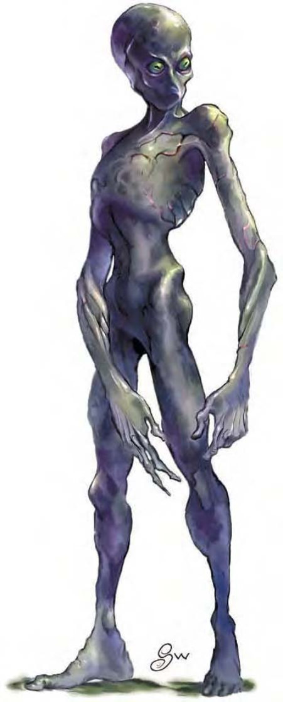

| 资料栏位 | 变形怪 (Doppelganger) 中型人形怪物 (变形) |
| 生命骰 | 4d8+4 (22HP) |
| 先攻 | +1 |
| 速度 | 30英尺 (6格) |
| 防御等级 | 15 (+1敏捷、+4天生)、接触11、措手不及14 |
| 基本攻击/擒抱 | +4 / +5 |
| 攻击 | 挥击+5近战 (1d6+1) |
| 全力攻击 | 挥击+5近战 (1d6+1) |
| 占据/触及 | 5英尺 / 5英尺 |
| 特殊攻击 | 侦测思想 |
| 特殊能力 | 移形、对“睡眠术”及魅惑免疫 |
| 豁免 | 强韧+4、反射+5、意志+6 |
| 属性 | 力量12、敏捷13、体质12、智力13、感知14、魅力13 |
| 技能 | 唬骗+10*、交涉+3、易容+9* (扮演+11)、威吓+3、聆听+6、察言观色+6、侦察+6 |
| 专长 | 闪避、强韧加强 |
| 环境 | 任何 |
| 组织 | 单独、成双或成队 (3-6) |
| 挑战级数 | 3 |
| 宝藏 | 双倍标准 |
| 阵营 | 通常绝对中立 |
| 进化 | 视人物职业而定 |
| 等级修正值 | +4 |
身形削瘦，皮肤灰白的人形生物，四肢细长，头成球形，大眼突出。面无表情，脸孔无特色。
这种奇怪的生物可以将外型变成任何他们遇过的生物。以原本面目出现时，看起来像是瘦弱、四肢细长的人形生物，皮肤苍白而光滑，眼睛大而凸出，细长的瞳孔呈黄色。和他原本面目相反，变形怪是个很强韧的家伙，动作也很敏捷，不像他外表看起来那么脆弱。
变形怪能够变成任何4到8英尺的人形生物，天生就是当间谍或刺客的料。可以偷偷溜过警卫，潜入戒备森严的地点，甚至可以愚弄被模仿者的另一半或密友。既狡猾又有耐性，不会轻率的展开攻击，会耐心的等候机会上门。
擅长利用天生的变形能力来进行突袭，设置圈套或是渗透类人社会。不算极端邪恶，但只对自己的利益有兴趣，将其他生物都当作玩弄或欺骗的对象。
其天生形态大约是5英尺半高，150磅重。
战斗以天生形态出现时，他们会用强而有力的拳头攻击。变成战士或是其他武装人员时，则会使用适当的武器攻击敌人。在这种情况下，变形怪会用侦测思想能力，采取和所模仿的对象相同的战术和策略。
侦测思想（超自然）：变形怪可以持续侦测周围生物的思想，这个能力功用与“侦测思想”法术类似（施法者等级18；意志检定DC=13过则无效）、效果永久有效。变形怪可随时压抑或启用这个能力，均视为即时动作。豁免检定DC的调整值与魅力调整值相同。
移形（超自然）：可以变成任何小型或中型人形生物的形体，但此时不能使用天生武器攻击。此形体可以维持到他变成另一种形体为止。解除魔法对此能力无效，但是被杀死后会恢复原貌。“真实目光”法术或能力可以揭露他的天生形态。
技能：变形怪在进行“唬骗”和“易容”时具有+4种族加值。使用“移形”能力时，进行“易容”检定具有额外+10环境加值。如果能够读取对手的思想，进行“唬骗”和“易容”检定时的环境加值还可再+4。
变形怪的人物
顶尖间谍人选，变形怪可以渗透敌方领土，模仿指挥官，侦测敌人心里的想法或计划。
变形怪人物具有下列种族特性：
― 力量+2、敏捷+2、体质+2、智力+2、感知+2、魅力+2。
― 中型。
― 变形怪的基本行走速度为30英尺。
― 黑暗视觉可达60英尺。
― 种族生命骰：变形怪起始为4级人形怪物，生命骰4d8，基本攻击加值+4，强韧、反射与意志的基本豁免检定则分别是+1、+4、+4。
― 种族技能：变形怪的人形怪物等级使他的技能点数为7x (2+智力调整值)、本职技能为唬骗、交涉、易容、威吓、聆听、察言观色、侦察。
― 种族专长：变形怪的人形怪物等级具有三个专长。
― +4天生防御加值。
― 进行“唬骗”和“易容”时具有+4种族加值。使用“移形”能力时，进行“易容”检定具有额外+10环境加值。如果能够读取对手的思想，进行“唬骗”和“易容”检定时的环境加值还可再+4。
― 特殊攻击（见前文）：侦测思想。
― 特殊能力（见前文）：移形、对睡眠及魅惑免疫。
― 母语：通用语。额外语言：风族语、矮人语、精灵语、侏儒语、半身人语、巨人语、土族语。
― 适合职业：游荡者
― 等级修正值：+4